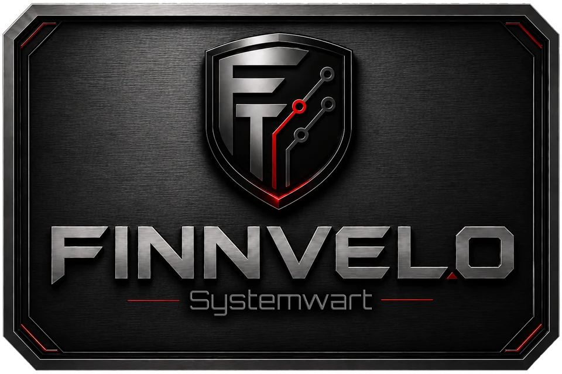

Prüfen · Bereinigen · Beschleunigen
Finnvelo Systemwart
In EntwicklungEin Allround-Werkzeug für Windows: Altlasten aufspüren und entfernen, Autostart und Dienste zähmen, Treiber prüfen, Temperaturen und Auslastung im Blick behalten. Vor jedem Eingriff legt das Programm einen Wiederherstellungspunkt an.
Beschreibung
Der Systemwart sammelt an einer Stelle, wofür man sonst ein halbes Dutzend Einzelwerkzeuge braucht. Er liest die verbaute Hardware aus, zeigt alle Laufwerke mit ihrem freien Platz, findet die größten Ordner und Dateien und räumt temporäre Ablagen, Zwischenspeicher und Reste alter Windows-Aktualisierungen weg.
Darüber hinaus lassen sich Autostart-Einträge, Dienste, geplante Aufgaben und installierte Programme durchsehen und einzeln abschalten oder entfernen. Jede Änderung landet in einem Journal und lässt sich mit einem Klick zurücknehmen.
Treiber werden über die Aktualisierungsschnittstelle von Windows geprüft. Herstellerseiten werden nur verlinkt, nie im Hintergrund angezapft – so bleibt nachvollziehbar, woher eine Datei stammt.
Oberfläche
Ansichten und Bildschirmfotos werden hier ergänzt.
Tutorial-Video
Ein Tutorial-Video wird hier ergänzt, sobald es bereitsteht.
Besondere Vorteile
- Wiederherstellungspunkt vor jedem Eingriff
- Änderungsjournal mit Rückgängig – jede Aktion einzeln
- Schutzliste für systemkritische Dienste, die nicht angefasst werden
- Temperaturen und Auslastung live
- Treiber nur aus seriöser Quelle
- Läuft eigenständig, keine Installation nötig
Zielgruppe
Alle, die ihren Windows-Rechner selbst in Ordnung halten wollen, ohne sich durch ein Dutzend Systemeinstellungen zu klicken – und ohne Angst, dabei etwas kaputtzumachen.
Download (PC-Version)
Programm herunterladen
Die Fassung für Windows. Sie läuft eigenständig, eine Installation ist nicht nötig. Für die meisten Aufgaben fragt das Programm beim Start nach Administratorrechten.
PC-Version herunterladenHinweis
Windows meldet bei unbekannten Programmen einen Warnhinweis. Über „Weitere Informationen“ → „Trotzdem ausführen“ lässt sich der Start fortsetzen.